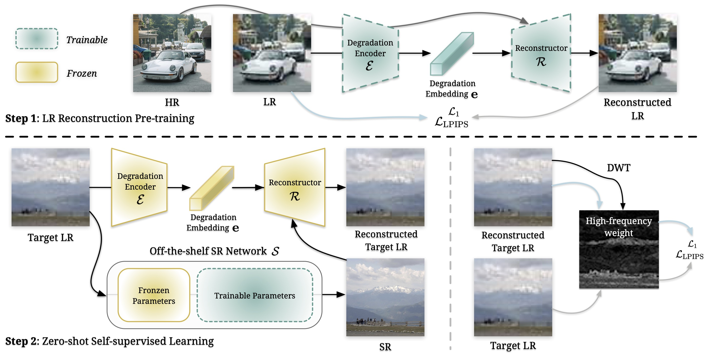
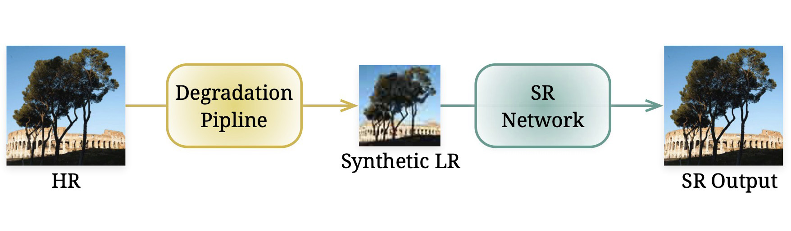
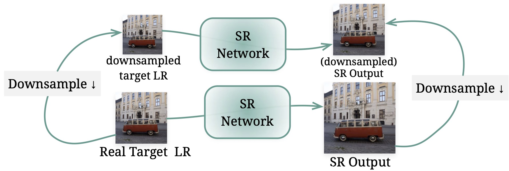
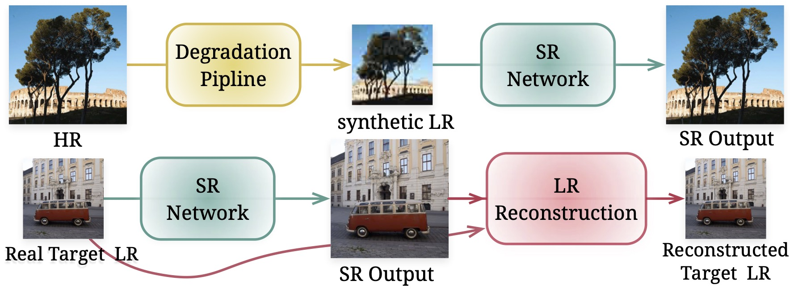
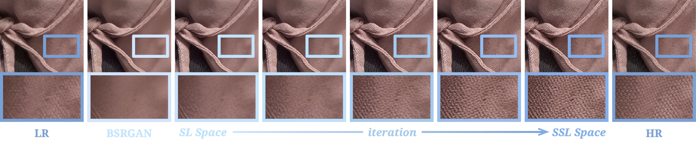
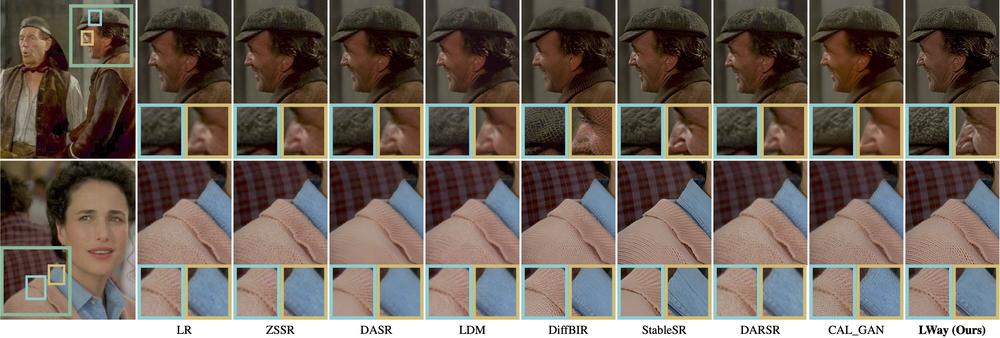

LWay improves the generalization and detail restoration capabilities of SR models on unseen real-world image.
Abstract
For image super-resolution (SR), bridging the gap between the performance on synthetic datasets and real-world degradation scenarios remains a challenge. This work introduces a novel "Low-Res Leads the Way" (LWay) training framework, merging Supervised Pre-training with Self-supervised Learning to enhance the adaptability of SR models to real-world images.
Our approach utilizes a low-resolution (LR) reconstruction network to extract degradation embeddings from LR images, merging them with super-resolved outputs for LR reconstruction. Leveraging unseen LR images for self-supervised learning guides the model to adapt its modeling space to the target domain, facilitating fine-tuning of SR models without requiring paired high-resolution (HR) images. The integration of Discrete Wavelet Transform (DWT) further refines the focus on high-frequency details.
Extensive evaluations show that our method significantly improves the generalization and detail restoration capabilities of SR models on unseen real-world datasets, outperforming existing methods. Our training regime is universally compatible, requiring no network architecture modifications, making it a practical solution for real-world SR applications.
LWay: Low-Res Leads the Way

The proposed training pipeline (LWay) consists of two steps.
Step 1, we pre-train a LR reconstruction network to capture degradation embedding from LR images. This embedding is then applied to HR images, regenerating LR content.
Step 2, for test images, a pre-trained SR model generates SR outputs, which are then degraded by the fixed LR reconstruction network. We iteratively update the SR model using a self-supervised learning loss applied to LR images, with a focus on high-frequency details through weighted loss.
This refinement process enhances the SR model’s generalization performance on previously unseen images.
Supervised learning using synthetic paired data

Self-supervised learning using single image
Supervised pre-training + Self-supervised learning (Ours)

Results
Fine-tuning process

The SR model advances through the proposed fine-tuning iterations, moving from the supervised learning (SL) space of synthetic degradation to the self-supervised learning (SSL) space learned from test images. This results in enhanced SR quality and fidelity.
Qualitative comparisons on real-world datasets

The content within the blue box represents a zoomed-in image. Using LWay, every model has a great improvment.
Qualitative comparisons on old films

BibTeX
@article{chen2024lowres,
author = {Chen, Haoyu and Li, Wenbo and Gu, Jinjin and Ren, Jingjing and Sun, Haoze and Zou, Xueyi and Yan, Youliang and Zhang, Zhensong and Zhu, Lei},
title = {Low-Res Leads the Way: Improving Generalization for Super-Resolution by Self-Supervised Learning},
journal = {CVPR},
year = {2024},
}